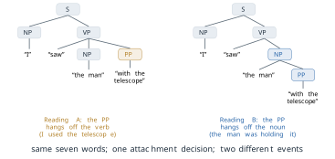
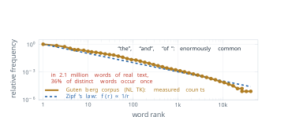
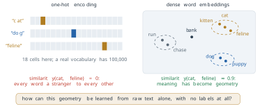
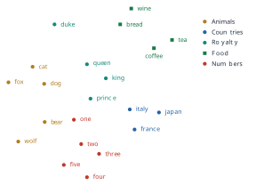
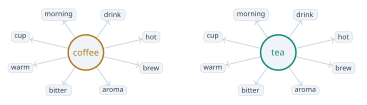
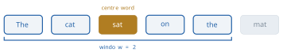
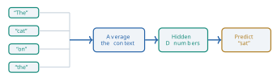
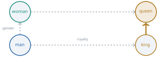

1 Representing Language
1.1 Why Language Is Hard
In 1950 Alan Turing opened a paper in the journal Mind with the question “Can machines think?” (Turing 1950). He judged the question too vague to answer as it stood, and replaced it with a test of behaviour. Suppose a machine holds a conversation in writing that an interrogator cannot tell apart from a conversation with a person. Then there is no principled ground for refusing it the word. Turing assumed that conversation is a fair sample of intelligence, and that a judge who sees only text sees enough. Whatever one thinks of those assumptions, the test made language the place where the question would be settled.
Seventy-five years later, systems built on large language models write working code, translate between many languages and pass professional examinations. They also fail in ways that no fluent human speaker fails. They state false facts with confidence, mishandle simple counting, and can be steered by an adversarial prompt. A child of three uses language with no apparent effort, and machines have found it hard for seventy years. This section asks why. The answer is not one missing algorithm. It is a family of distinct problems, each of which needs its own kind of solution, and the rest of this book is organised around building those solutions in turn. Here we name the problems, state each one precisely, and show how four successive approaches to language ran into them.
Machine learning handles several kinds of data well, and each of them arrives with a structure that a method can use. An image is a fixed grid of pixels, so it is a point in \(\mathbb{R}^{H \times W \times 3}\), and the spatial relation between two pixels is the same in every image. A row of a table is a point in \(\mathbb{R}^d\) for a fixed \(d\), and each coordinate has a type and a meaning that does not change from row to row. A recording of sound is a sampled signal, a sequence of real numbers at regular intervals, with the whole apparatus of Fourier analysis ready to apply. In all three cases the data are numbers, and the arithmetic on them means something.
Text has none of these properties. It is a sequence of symbols drawn from a finite vocabulary, and its length is not known in advance.
Definition 1.1 (Text over a vocabulary) Let \(V\) be a finite set of symbols, the vocabulary, with \(|V|\) elements. A text of length \(T\) is a sequence \[ w_{1:T} = (w_1, w_2, \ldots, w_T), \qquad w_t \in V, \tag{1.1}\] and the set of all texts is \(V^{*} = \bigcup_{T \ge 0} V^{T}\).
Two features of Definition 1.1 drive everything in this chapter. The first is that the elements of \(V\) are symbols, not numbers. The word cat is not larger or smaller than the word dog, and there is no operation on the two strings that yields anything about what they mean. Before a learning method can be applied, every word must be mapped to a numerical object. The choice of that mapping is a modelling decision with consequences, and it is the subject of the last part of this section and of the whole of the next. The second feature is that a text has structure that Equation 1.1 does not show. Words combine into phrases, phrases into clauses and clauses into sentences. That hierarchy is not written in the sequence. It has to be recovered, and it can often be recovered in more than one way.
We can now state the four problems. Language is ambiguous: the same sequence admits more than one analysis at every level. Meaning is context dependent: it cannot be read off one word at a time. Language is large: the vocabulary is big, the space of sentences is effectively unbounded, and the frequencies of words are extremely uneven. And language relies on world knowledge: speakers leave out what they expect the listener to know, so a text often cannot be understood from the text alone. The four overlap, and a single sentence can show all of them, but each defeats methods in its own way, and each was attacked by different means. We take them in order. Context dependence has no subsection of its own, because it is the other side of ambiguity: the context is what resolves an ambiguous word, so we treat it at the end of the subsection on ambiguity.
Ambiguity
Natural language is ambiguous at every level at which it can be analysed, and at all of them at once. It is useful to separate the levels, because each one is resolved by a different kind of information.
Definition 1.2 (Levels of ambiguity) A string is lexically ambiguous when one of its words has more than one meaning. It is syntactically ambiguous when it has more than one valid grammatical structure. It is semantically ambiguous when a single structure still admits more than one interpretation, for example because a pronoun can refer to more than one thing. It is pragmatically ambiguous when the meaning intended by the speaker differs from the literal meaning of the words.
Lexical ambiguity is the familiar kind. The sentence She went to the bank is grammatical whether the bank is beside a river or holds money, and nothing in the sentence decides between them. The phenomenon is not rare. In the second edition of the Oxford English Dictionary the entry for the verb set ran to about 430 senses (Guinness World Records, n.d.), and when the dictionary’s editors revised the entry for run in 2011, the verb alone came to 645 (Winchester 2011). These are among the most common words in English. A better description than “words have meanings” is that words have potentials for meaning, which a context realises. The context is itself made of words, and those words may be ambiguous too.
Syntactic ambiguity concerns structure. The standard example is I saw the man with the telescope. In one reading the speaker used a telescope to see the man, and the prepositional phrase with the telescope modifies the verb phrase. In the other the man was holding a telescope, and the same phrase modifies the noun phrase the man. Both readings are grammatical. A context-free grammar of the kind Chomsky formalised (Chomsky 1957) assigns the sentence two parse trees, shown in Figure 1.1. The two trees agree at the top, where the sentence splits into a noun phrase and a verb phrase. They differ in exactly one place: the node to which the prepositional phrase attaches. This is the prepositional-phrase attachment problem, and it has been a standard difficulty for parsers for decades. The grammar supplies the candidate structures. It does not choose between them, because the choice depends on which event is more plausible in the world.

One attachment decision is a small fork, but forks multiply. A verb phrase followed by a noun phrase and \(k\) prepositional phrases has a number of attachment structures that grows as the Catalan numbers: 2 for one phrase, 5 for two, 14 for three. Exercise 2 asks for the count. A parser that must consider every structure of a long sentence therefore faces a number of candidates that grows exponentially in the length of the sentence, and grammar alone prunes none of them.
Semantic ambiguity survives even when the structure is fixed. Consider the pair
The trophy would not fit in the brown suitcase because it was too big.
The trophy would not fit in the brown suitcase because it was too small.
In the first sentence it refers to the trophy, and in the second to the suitcase. The two sentences have the same structure, and the pronoun stands in the same grammatical position in both. No agreement rule distinguishes the referents, since both nouns are singular and inanimate. What decides is physical common sense: an object fails to fit in a container either because the object is too large or because the container is too small. Hector Levesque, Ernest Davis and Leora Morgenstern turned pairs of this kind into a test of machine understanding at the 2012 conference on Principles of Knowledge Representation and Reasoning (Levesque et al. 2012). The trophy pair is one of the examples Levesque constructed for it. They named the test after Terry Winograd, whose 1972 book on a program for understanding natural language contained the pair that became the prototype (Winograd 1972). We return to Winograd’s own sentence below. The assumption behind the test is that a pair which differs in one word, and whose answer flips with that word, cannot be solved by surface statistics, because the two sentences have nearly the same statistics.
Definition 1.3 (Winograd schema) A Winograd schema is a pair of sentences that differ in one or two words. Each contains a pronoun that could refer to either of two noun phrases. The referent is different in the two sentences, and identifying it requires knowledge of the world rather than of grammar.
Pragmatic ambiguity is the gap between what is said and what is meant. A request to open a window phrased as a question about whether the listener is able to open it is not a question about ability, and a listener who answered it as one would have misunderstood. Irony and sarcasm invert the literal meaning entirely. Of the four levels in Definition 1.2 this is the one least visible in the text itself, since the evidence that decides it is the situation in which the words were spoken.
This brings us to the second problem, context dependence. If a word has many potential meanings and the context selects one of them, the next question is how context can be represented. The idea that answers it came from linguistics. In 1957 the British linguist John Rupert Firth summarised it in the line that a word is known by the company it keeps (Firth 1957). Firth’s claim is that the meaning of a word is not stored in the word, as a dictionary entry would suggest, but shows itself in the words that habitually occur around it. The assumption is a strong one: that two words used in the same contexts have related meanings, so that the pattern of contexts is enough to recover the relation.
Definition 1.4 (Distributional hypothesis) The distributional hypothesis states that words which occur in similar contexts tend to have similar meanings, so that the meaning of a word can be characterised by the distribution of the contexts in which it occurs.
Definition 1.4 turns a question about meaning into a question about counts and co-occurrences, and so into a question a machine can work on. Every method in the next chapters is an implementation of it in some form. Word2Vec and GloVe learn one vector per word from the contexts it occurs in. BERT (Bidirectional Encoder Representations from Transformers) and GPT (Generative Pre-trained Transformer), two models built on the Transformer described later in this section, go further and compute a different vector for each occurrence of a word, from the actual context around that occurrence. The next section builds the first of these from the ground up.
Scale and sparsity
The third problem is a matter of size. English has on the order of 170,000 words in current use, and a practical vocabulary for a language model runs from a few tens of thousands to a few hundred thousand tokens. Take \(|V| = 10^{5}\). The number of distinct sequences of ten tokens is \[ |V|^{10} = \left(10^{5}\right)^{10} = 10^{50}. \tag{1.2}\] The largest training corpora contain of the order of \(10^{13}\) tokens, and so fewer than \(10^{13}\) sentences. Even if every sentence in such a corpus were a distinct ten-token sequence, the corpus would cover less than a fraction \(10^{13} / 10^{50} = 10^{-37}\) of the space in Equation 1.2. Most of those sequences are not English, but the grammatical ones are still far too many to enumerate, and ten tokens is a short sentence. A language model therefore cannot work by recalling sentences it has seen. It has to generalise: to assign sensible behaviour to sentences that occur nowhere in its training data.
The difficulty is worse than Equation 1.2 suggests, because words do not occur with anything like equal frequency. Rank the words of a corpus from the most frequent (rank 1) to the least, and write \(f(r)\) for the relative frequency of the word at rank \(r\). George Kingsley Zipf documented across languages in the 1930s and 1940s that this function is close to a power law (Zipf 1935).
Definition 1.5 (Zipf’s law) Zipf’s law states that the relative frequency of the word of rank \(r\) in a corpus is approximately inversely proportional to a power of its rank, \[ f(r) \propto r^{-s}, \tag{1.3}\] with exponent \(s\) close to 1.
Taking logarithms of Equation 1.3 gives \(\log f(r) = c - s \log r\), so on axes where both rank and frequency are logarithmic the law is a straight line of slope \(-s\). Figure 1.2 draws the law in that form, with the reference line \(f(r) \propto 1/r\) dashed.

To see what the law implies, normalise it. For a vocabulary of \(|V|\) words and \(s = 1\), the frequencies must sum to one, so \[ f(r) = \frac{1}{r \, H_{|V|}}, \qquad H_{m} = \sum_{k=1}^{m} \frac{1}{k}, \tag{1.4}\] where \(H_m\) is the \(m\)-th harmonic number, close to \(\ln m + 0.5772\) for large \(m\). The share of all running words taken by the \(k\) most frequent words is then \(H_k / H_{|V|}\).
As a worked example take \(|V| = 10^{5}\), the size used in Equation 1.2, for which \(H_{|V|} = 12.09\). The single most frequent word accounts for \(1/12.09\), or 8.3 per cent, of all running words. The top 100 words account for \(H_{100}/H_{|V|} = 5.187/12.09\), or 42.9 per cent, and the top 1,000 for \(7.486/12.09\), or 61.9 per cent. The 90,000 words ranked below 10,000, which make up nine tenths of the vocabulary, share only \(1 - H_{10^4}/H_{|V|} = 1 - 9.788/12.09\), or 19.0 per cent, of the text. Most words are rare, and all the rare words together make up a small part of the text.
Real text shows the same shape. The eighteen books of the Gutenberg collection distributed with the Natural Language Toolkit (NLTK), lowercased and restricted to tokens made only of the letters a to z, contain 2,135,393 running words drawn from 41,481 distinct ones. The most frequent word is the, with 133,583 occurrences, followed by and and of. A least-squares line fitted to the logarithms of the first 5,000 ranks has slope \(-1.16\), close to the \(-1\) of Equation 1.3. And 14,997 words, which is 36.2 per cent of the vocabulary, occur exactly once, while making up only 0.70 per cent of the running text. A word that occurs exactly once in a corpus is called a hapax legomenon. Growing the corpus does not remove them. When the same tokens are read in twenty equal slices, the first slice of 106,769 tokens introduces 5,887 new words, about one in every 18 tokens, and the last slice of the same size still introduces 2,233, about one in every 48. The rate falls, but it does not reach zero.
This is data sparsity: for most words, and for nearly all combinations of words, a corpus holds too few examples to estimate anything about them directly, and no corpus of practical size changes that. Zipf’s law is itself only an approximation, and the same corpus shows where it fails. The law with \(s = 1\) predicts that the most frequent word is twice as frequent as the second, but the occurs only 1.40 times as often as and. In the tail the fitted slope is steeper than \(-1\), so rare words are rarer than \(s = 1\) predicts. Exercise 4 makes this precise. The value of the law is not that it fits exactly but that it describes the shape correctly: a short head of very frequent words and a long tail that never empties.
World knowledge
The fourth problem is the one the trophy pair already showed: understanding a sentence often needs facts that are not in it. Winograd’s own example is a pair that differs in one word (Winograd 1972):
The city councilmen refused the demonstrators a permit because they feared violence.
The city councilmen refused the demonstrators a permit because they advocated violence.
In the first sentence they is the councilmen, and in the second it is the demonstrators. Both noun phrases are plural and both are in scope, and the two sentences have the same structure, so nothing in the grammar selects the referent. A reader selects it from knowledge about how civic authorities behave, what demonstrators might want and why a permit might be refused. That knowledge concerns power, causation and the typical behaviour of people and institutions. It is not written in any grammar, and it is too large and too varied to be written down as rules. If a machine is to have it, it must be learned from data, and the only data that contain it in quantity are very large amounts of human text. That observation is one of the arguments for large-scale pre-training, to which the book returns in Chapter 5.
Four approaches and their limits
The history of natural language processing (NLP) can be read as four successive approaches, each of which made real progress, met a limit set by one or more of the four problems, and so motivated the next.
The first approach, from the 1950s to the 1980s, wrote the rules of language down by hand. Its theoretical basis was the generative grammar of Noam Chomsky, whose Syntactic Structures of 1957 showed that a finite set of rewrite rules can generate an unbounded set of grammatical sentences (Chomsky 1957). The assumption was that the rules of a language can be stated explicitly and completely. The best-known program of the period illustrates both the appeal and the limit. Joseph Weizenbaum’s ELIZA, built at the Massachusetts Institute of Technology (MIT) and described in 1966, used keyword patterns and transformation rules to play the part of a psychotherapist, largely by reflecting the user’s own statements back as questions (Weizenbaum 1966). Some users responded to it as though it understood them, which troubled its author (Weizenbaum 1976). It did not understand anything. The deeper difficulty for every rule-based system was that language is full of exceptions. Each rule needs sub-rules, the sub-rules need further rules, and the system becomes large, brittle and unable to handle input its authors did not foresee.
The second approach, dominant in the 1990s and 2000s, replaced rules with counts. Its central model is the \(n\)-gram language model, whose form follows from two steps. Any probability distribution over texts can be factorised by the chain rule of probability, \[ P(w_{1:T}) = \prod_{t=1}^{T} P(w_t \mid w_{1:t-1}), \tag{1.5}\] which is exact and assumes nothing. The model then assumes that each word depends only on the \(n-1\) words before it, \[ P(w_t \mid w_{1:t-1}) \approx P(w_t \mid w_{t-n+1:t-1}), \tag{1.6}\] which is a Markov assumption of order \(n-1\). Each conditional probability is estimated by counting. Writing \(c(\cdot)\) for the number of times a sequence occurs in the training corpus, the maximum likelihood estimate is \[ \hat{P}(w_t \mid w_{t-n+1:t-1}) = \frac{c(w_{t-n+1:t})}{c(w_{t-n+1:t-1})}. \tag{1.7}\] The ratio is the maximum likelihood estimate for a simple reason. For a fixed history, the next word is a draw from a categorical distribution over \(V\), and the likelihood of the observed next words is \(\prod_{w} p_w^{c_w}\), where \(c_w\) is the count of \(w\) after that history. Maximising \(\sum_w c_w \log p_w\) subject to \(\sum_w p_w = 1\), with one Lagrange multiplier, gives \(p_w = c_w / \sum_{w'} c_{w'}\), and the denominator is the count of the history. Claude Shannon had used approximations of exactly this form, built from letter and word statistics of English, in his 1948 paper on the mathematical theory of communication (Shannon 1948). In the statistical era they became the working core of real systems: statistical machine translation, and speech recognition built on hidden Markov models (Rabiner 1989).
Equation 1.7 exposes both limits of counting. The first is sparsity. A trigram model (\(n = 3\)) over \(|V| = 10^{5}\) words has a conditional distribution for each of the \(|V|^{2} = 10^{10}\) possible two-word histories, each with \(|V| - 1\) free parameters, so about \(10^{15}\) parameters in all. Zipf’s law guarantees that almost all of them are estimated from zero or one occurrence. A trigram never seen in training receives probability zero from Equation 1.7, and by Equation 1.5 so does every sentence that contains it. Smoothing methods move some probability onto unseen events, but they cannot say which unseen events are plausible. The second limit concerns meaning. In an \(n\)-gram model every word is an atomic symbol, and counts for one word say nothing about any other. The model learns that the cat sat is common, and that teaches it nothing about the feline sat, even though, by Definition 1.4, cat and feline occur in similar contexts and the information that they are related is present in the corpus. The representation has no place to keep it.
The third approach began in 2013, when Tomas Mikolov and colleagues at Google described Word2Vec (Mikolov, Chen, et al. 2013). The method learns a dense vector of a few hundred real numbers for each word, trained so that words occurring in similar contexts receive nearby vectors. The vectors turned out to encode relations as directions. In the same year Mikolov, Wen-tau Yih and Geoffrey Zweig showed that the vector computed as \(\text{king} - \text{man} + \text{woman}\) lies close to the vector for \(\text{queen}\) (Mikolov, Yih, et al. 2013). This is the distributional hypothesis made into geometry. For sequences, recurrent networks with the long short-term memory (LSTM) cell of Hochreiter and Schmidhuber (Hochreiter and Schmidhuber 1997) were applied widely, carrying information across longer stretches of text than earlier recurrent networks. In 2014 Dzmitry Bahdanau, Kyunghyun Cho and Yoshua Bengio added an attention mechanism that lets a translation model learn which source words to consult for each word it produces. The work was released as a preprint that year and published at the International Conference on Learning Representations (ICLR) in 2015 (Bahdanau et al. 2015). The limit of this approach was the recurrence itself. A recurrent network reads tokens one at a time, so its training cannot be spread across the positions of a sequence in parallel, and information from early tokens fades by the time late tokens are read. Attention eased the second difficulty without removing the first. Chapter 2 develops both.
The fourth approach is the one current systems use. In 2017 Ashish Vaswani and seven colleagues, most of them at Google, presented the Transformer at the Conference on Neural Information Processing Systems (NeurIPS) (Vaswani et al. 2017). It removed recurrence and convolution entirely and built the model from attention alone, which made training parallel across positions and gave every token direct access to every other. Models built on it grew quickly. BERT-large, from Jacob Devlin and colleagues at Google in 2018, had 340 million parameters (Devlin et al. 2019), and GPT-3, from Tom Brown and colleagues at OpenAI in 2020, had 175 billion (Brown et al. 2020). The growth in scale, and what it does and does not buy, is the subject of Chapter 4.
The representation problem
The four problems have a common root, and it is the first feature of Definition 1.1: the words are symbols, and a learning method needs numbers. The simplest way to turn a symbol into a vector is to give each word its own coordinate.
Definition 1.6 (One-hot encoding) Index the vocabulary as \(V = \{v_1, \ldots, v_{|V|}\}\). The one-hot encoding of the word \(v_i\) is the standard basis vector \(\mathbf{e}_i \in \mathbb{R}^{|V|}\), whose \(i\)-th entry is 1 and whose other entries are 0.
One-hot vectors are exact and need no training, and they are useless for meaning. For any two different words \(v_i\) and \(v_j\), \[ \mathbf{e}_i^{\top} \mathbf{e}_j = 0, \qquad \lVert \mathbf{e}_i - \mathbf{e}_j \rVert = \sqrt{2}, \tag{1.8}\] so the cosine similarity of every pair of distinct words is 0, and every word is at the same distance from every other. The encoding records that cat and feline are different symbols and nothing more. It is the vector form of the atomic symbols of the \(n\)-gram model, and it inherits the same limit. The left panel of Figure 1.3 draws it. The right panel shows what the next section aims for: a dense representation in which similar words are close, so that cat, kitten and feline form one group and dog and puppy another. The values printed beneath the panels contrast the two: zero similarity for one-hot vectors, and a high similarity for the dense vectors of cat and feline. The dense panel is a schematic in two dimensions, and its similarity value is illustrative.

The question the figure leaves open is how the right panel can be obtained from the left. The obvious answer, to have people label which words are similar, does not scale, since someone would have to supply the labels for every word of every language. The distributional hypothesis suggests a different route. If similar words occur in similar contexts, the contexts in a large unlabelled corpus already contain the information, and a model trained to predict words from their contexts may be forced to place similar words close together. Whether that works, and why, is the subject of the next section.
Two cautions apply to the framework of this section. The first is that the four problems are a classification for the purpose of organising solutions, not a theory of language. They overlap. The trophy pair is at once a semantic ambiguity and a demand for world knowledge, and sparsity makes every other problem harder. The second is that the account of history above is a simplification. The eras overlapped, rule-based components survive inside modern systems, and many statistical ideas, including the factorisation of Equation 1.5, remain at the centre of the neural models that replaced the counts. What changed from one approach to the next was how the conditional probabilities in Equation 1.5 are represented and estimated.
Exercises
For each of the following, name the level of ambiguity in Definition 1.2 that it shows, and say what information would resolve it. (a) Visiting relatives can be boring. (b) The chicken is ready to eat. (c) He saw her duck. (d) A guest who says It is cold in here to a host standing beside an open window. (e) The bat flew out of the cave.
The sentence I saw the man on the hill with the telescope has a verb phrase followed by a noun phrase and two prepositional phrases. Enumerate its attachment structures, assuming each prepositional phrase attaches to the verb phrase or to a noun phrase to its left, and that the attachments do not cross. Show that there are 5. Then show that with \(k\) prepositional phrases the number of structures \(a_k\) satisfies the Catalan recurrence, and deduce that \(a_3 = 14\).
A language has a vocabulary of \(|V| = 50{,}000\) words whose frequencies follow Equation 1.4 with \(s = 1\). Using \(H_m \approx \ln m + 0.5772\), find the share of running text taken by the 100 most frequent words, and the number of occurrences per million running words of the word of rank 20,000. In a corpus of one million words, roughly how many vocabulary items would be expected to occur fewer than five times?
The Gutenberg corpus of the worked example has \(N = 2{,}135{,}393\) running words and \(|V| = 41{,}481\) distinct ones. (a) Assuming Equation 1.4 with \(s = 1\), compute the expected number of occurrences of the word of rank \(|V|\). (b) Compare the result with the observation that 36.2 per cent of the vocabulary occurs exactly once, and explain, using the slope \(-1.16\) fitted over the first 5,000 ranks, which way the law errs in the tail. (c) The law predicts that the most frequent word occurs twice as often as the second. The observed ratio is 1.40. Which part of the rank-frequency curve does each discrepancy concern, and why do both matter for a language model?
A corpus consists of the three sentences the cat sat, the cat ran and the dog sat, each preceded by a start symbol \(\langle s \rangle\) and followed by an end symbol \(\langle /s \rangle\). (a) Estimate the bigram probabilities \(\hat{P}(w_t \mid w_{t-1})\) by Equation 1.7. (b) Use Equation 1.5 and Equation 1.6 to compute the probability of the dog ran. (c) Explain why the answer is zero although every word in the sentence occurs in the corpus, and say which of the four problems this illustrates. (d) Count the free parameters of a trigram model over \(|V| = 10^{5}\) words, and compare with the number of trigram tokens in a corpus of \(10^{12}\) words.
- Prove Equation 1.8. (b) Let \(W\) be any matrix with \(|V|\) columns. Show that \(W\mathbf{e}_i\) is the \(i\)-th column of \(W\), so that every linear function of a one-hot input is a table lookup with one independent entry per word. (c) Conclude that a linear model on one-hot inputs, trained on sentences that contain cat but never feline, makes no use of what it learned about cat when it meets feline. What would have to change in the representation for that to happen?
Construct two new Winograd schemas in the sense of Definition 1.3: one whose resolution needs physical knowledge and one whose resolution needs social knowledge. For each, compare the bag of words of the two sentences. Then argue that a model which sees a sentence only through its word counts, or through its \(n\)-gram counts with small \(n\), must either give the same answer to both sentences or rely on the single word in which they differ. Explain why the second option is not enough in general.
1.2 Words as Vectors
The previous section ended on an open question. A one-hot vector (Definition 1.6) records that two words are different and nothing else: by Equation 1.8 every pair of distinct words has cosine similarity zero and every word sits at the same distance from every other. The right panel of Figure 1.3 showed what we want instead, a space in which cat, kitten and feline lie close together. The question was how such a space can be obtained from unlabelled text. Asking people to label which words are similar does not scale, since the labels would be needed for every pair of words in every language. This section answers the question. The answer is to set a machine a prediction task that it can only do well if it places similar words close together, to train it on raw text, and then to keep the internal representation it learned and discard the predictions.
We first say precisely what is wanted. Throughout, \(V\) is the vocabulary of Definition 1.1, \(|V|\) its size, and \(\mathbf{e}_i\) the one-hot vector of the word \(v_i\).
Definition 1.7 (Word embedding) A word embedding of dimension \(D\) is a map that assigns to each word \(v_i \in V\) a vector \(\mathbf{v}_i \in \mathbb{R}^{D}\), with \(D\) much smaller than \(|V|\). It is stored as a matrix \(W \in \mathbb{R}^{|V| \times D}\) whose \(i\)-th row is \(\mathbf{v}_i^{\top}\), so that \[ \mathbf{v}_i^{\top} = \mathbf{e}_i^{\top} W . \tag{1.9}\]
The identity in Equation 1.9 is worth reading slowly. Multiplying a one-hot vector by a matrix selects one row of the matrix. No arithmetic happens, and in software the product is implemented as a table lookup. The one-hot vector is still the input. What changes is that the row it selects is a dense vector of \(D\) real numbers, typically a few hundred, each of which can be trained. Closeness between two embedded words is measured by the angle between their vectors.
Definition 1.8 (Cosine similarity) The cosine similarity of two non-zero vectors \(\mathbf{a}, \mathbf{b} \in \mathbb{R}^{D}\) is \[ \cos(\mathbf{a}, \mathbf{b}) = \frac{\mathbf{a}^{\top}\mathbf{b}}{\lVert \mathbf{a} \rVert \, \lVert \mathbf{b} \rVert}, \tag{1.10}\] which lies in \([-1, 1]\) and depends only on the directions of the two vectors.
For the one-hot vectors of two distinct words Equation 1.10 is always zero. For a good embedding we want it high for cat and feline and low for cat and government. Figure 1.4 shows the kind of result this section builds towards: words from five areas of meaning, most of which gather with others of their kind.

Context as the training signal
The distributional hypothesis (Definition 1.4) supplies the training signal. If similar words occur in similar contexts, then the contexts in a corpus already contain the information about which words are similar, and no labels are needed. Figure 1.5 shows the idea for two words. The words that occur near coffee in ordinary text (hot, drink, morning, cup, warm, bitter, aroma, brew) are, almost one for one, the words that occur near tea. The two words share no definition. They share a neighbourhood, and the neighbourhood can be counted.

To use the hypothesis we have to say what a context is. The simplest choice, and the one used in the rest of this section, is a fixed window of positions around each word.
Definition 1.9 (Context window) Let \(w_{1:T}\) be a text and \(c \ge 1\) an integer. The context of the word \(w_t\) with window size \(c\) is the multiset of words \(w_{t+j}\) with \(-c \le j \le c\), \(j \ne 0\) and \(1 \le t + j \le T\). The word \(w_t\) is the centre word. Each pair \((w_t, w_{t+j})\) is a (centre, context) training pair.
Counting these pairs over a whole corpus gives a matrix \(X \in \mathbb{R}^{|V| \times |V|}\), the co-occurrence matrix, whose entry \(X_{ij}\) is the number of times the word \(v_j\) occurs in the context of the word \(v_i\). Row \(i\) of \(X\) is a vector representation of \(v_i\), and by Definition 1.4 similar words should have similar rows. The rows are of the wrong kind, however. They have \(|V|\) entries, most of them zero, and Zipf’s law (Definition 1.5) guarantees that for most words the non-zero counts are small and noisy. The methods that follow can all be read as ways of compressing the information in \(X\) into \(D\) numbers per word.
The first method to do this at scale came from information retrieval. In 1990 Scott Deerwester, Susan Dumais, George Furnas, Thomas Landauer and Richard Harshman described Latent Semantic Analysis (LSA) in the Journal of the American Society for Information Science (Deerwester et al. 1990). LSA counts words against documents rather than against windows, and compresses the resulting term-by-document matrix with the singular value decomposition (SVD), keeping about 100 factors. Each word is then represented by its coordinates on those factors. The assumption is that the variation in word use that matters for meaning lies in a low-dimensional linear subspace of the count matrix, and the method showed that dense vectors with real semantic content can be computed from counts alone. Its limits were practical. A decomposition of a matrix with one row per word and one column per document is expensive in time and memory, and adding new text means computing it again.
The second step came from language modelling. In 2003 Yoshua Bengio, Réjean Ducharme, Pascal Vincent and Christian Jauvin published A Neural Probabilistic Language Model in the Journal of Machine Learning Research (Bengio et al. 2003). Their network predicted the next word from the previous few, as an \(n\)-gram model does, but it first mapped each word to a learned feature vector, and the vectors were trained together with the predictor. Words that behaved alike in prediction were given similar vectors, so what the network learned about one word carried over to its neighbours in the space. This is the remedy for the second limit of \(n\)-gram models in §1.1, where counts for cat said nothing about feline. The cost was the network itself. A hidden layer and an output layer with one unit per vocabulary word made each training step slow, and the method could not be run on corpora of billions of words with the hardware of the time.
The step that made learned vectors standard was taken at Google in 2013. Tomas Mikolov, Kai Chen, Greg Corrado and Jeffrey Dean proposed two very shallow architectures, the skip-gram and the continuous bag of words (CBOW), in a preprint early that year (Mikolov, Chen, et al. 2013). Later the same year Mikolov, Ilya Sutskever, Chen, Corrado and Dean presented the refinements that made them fast, negative sampling and the subsampling of frequent words, at the conference on Neural Information Processing Systems (NIPS, now NeurIPS) (Mikolov, Sutskever, et al. 2013). The method and its software became known as Word2Vec. Its premise, taken from Bengio and colleagues, is that a network trained on a prediction task must store something about each word in order to predict well. Its departure was to make the network as small as possible, on the view that a simple model trained on far more text beats a complex model trained on less.
The skip-gram model
The skip-gram model takes a centre word and predicts the words in its context. Given a text \(w_{1:T}\) and window size \(c\), it maximises the average log probability of the context words, \[ \frac{1}{T} \sum_{t=1}^{T} \; \sum_{\substack{-c \le j \le c \\ j \ne 0}} \log p(w_{t+j} \mid w_t), \tag{1.11}\] where the conditional probability of an output word \(w_O\) given an input word \(w_I\) is a softmax over the whole vocabulary, \[ p(w_O \mid w_I) = \frac{\exp\left(\mathbf{v}'^{\top}_{w_O} \mathbf{v}_{w_I}\right)}{\sum_{w \in V} \exp\left(\mathbf{v}'^{\top}_{w} \mathbf{v}_{w_I}\right)} . \tag{1.12}\] Each word has two vectors. The input vector \(\mathbf{v}_w\) is its row of the embedding matrix \(W\) of Definition 1.7. The output vector \(\mathbf{v}'_w\) is its column of a second matrix \(W' \in \mathbb{R}^{D \times |V|}\). Figure 1.6 draws the computation. The centre word enters as a one-hot vector, Equation 1.9 turns it into its row of \(W\), multiplication by \(W'\) produces one score \(\mathbf{v}'^{\top}_{w}\mathbf{v}_{w_I}\) for every word in the vocabulary, and Equation 1.12 turns the scores into probabilities. There is no non-linear hidden layer. After training, \(W'\) and the softmax are discarded and the rows of \(W\) are kept as the embedding. The prediction task is a means of shaping \(W\), and its outputs are never used.
The training pairs come from the text itself. Figure 1.7 shows one position of the window. With \(c = 2\) in the sentence The cat sat on the mat, the centre word sat has the four context words The, cat, on and the, which gives four training pairs. Moving the window one position to the right makes on the centre and gives four more. A sentence of \(T\) tokens yields \(2cT - c(c+1)\) pairs when \(T \ge c\) (Exercise 2). For our sentence, with \(T = 6\) and \(c = 2\), that is \(24 - 6 = 18\) pairs, and a corpus of a billion words with \(c = 5\) yields about \(10^{10}\). Nobody labels any of them. The text supervises itself, and this kind of training, in which the targets are parts of the input, returns in Chapter 3 as the way GPT is trained.

Why training on these pairs puts similar words close together can be seen from the gradient. Write \(s_w = \mathbf{v}'^{\top}_{w}\mathbf{v}_{w_I}\) for the score of word \(w\). The log of Equation 1.12 is \(s_{w_O} - \log \sum_{w} \exp(s_w)\), and differentiating with respect to the input vector gives \[ \frac{\partial \log p(w_O \mid w_I)}{\partial \mathbf{v}_{w_I}} = \mathbf{v}'_{w_O} - \sum_{w \in V} p(w \mid w_I)\, \mathbf{v}'_{w} . \tag{1.13}\] A gradient step moves \(\mathbf{v}_{w_I}\) towards the output vector of the word actually observed and away from the average output vector under the model’s current predictions. Two centre words that are observed with the same context words, such as coffee and tea, receive the same pulls, and so their input vectors move in the same directions. This is the distributional hypothesis carried out by gradient descent. Equation 1.13 also shows the cost. The sum runs over every word in the vocabulary, so each training pair costs time proportional to \(|V|\). Mikolov and colleagues put practical vocabularies at \(10^{5}\) to \(10^{7}\) words (Mikolov, Sutskever, et al. 2013).
The second architecture reverses the direction of prediction. The continuous bag of words model takes the \(2c\) context words, looks up each of their input vectors, averages them into one vector \[ \mathbf{h}_t = \frac{1}{2c} \sum_{\substack{-c \le j \le c \\ j \ne 0}} \mathbf{v}_{w_{t+j}}, \tag{1.14}\] and predicts the centre word from \(\mathbf{h}_t\) with the same output step as Equation 1.12. The average discards the order of the context words, which is the sense of bag in the name. Figure 1.8 shows the model for the same window as Figure 1.7. CBOW makes one prediction per position where skip-gram makes \(2c\), so it trains faster. Skip-gram gives each occurrence of a rare word \(2c\) separate updates of its own vector, where CBOW blends that word into an average with its neighbours, so skip-gram tends to represent rare words better.

Negative sampling
A softmax over the vocabulary at every step is the remaining obstacle to training on billions of words. Michael Gutmann and Aapo Hyvärinen had introduced noise-contrastive estimation (NCE) in 2010 as a way to fit models whose normalising sum is too expensive to compute, by training a classifier to tell data from samples of a known noise distribution. Their full account appeared in a journal in 2012 (Gutmann and Hyvärinen 2012). Mikolov and colleagues simplified it into negative sampling (Mikolov, Sutskever, et al. 2013). Their observation was that NCE is designed to recover the probabilities of the softmax, while for learning vectors those probabilities are not needed, so the method can be simplified as long as the vectors stay good. Write \(\sigma(x) = 1/(1 + e^{-x})\) for the logistic function. Negative sampling replaces each \(\log p(w_O \mid w_I)\) term of Equation 1.11 by \[ \log \sigma\left(\mathbf{v}'^{\top}_{w_O}\mathbf{v}_{w_I}\right) + \sum_{i=1}^{k} \mathbb{E}_{w_i \sim P_n} \left[ \log \sigma\left(-\mathbf{v}'^{\top}_{w_i}\mathbf{v}_{w_I}\right) \right] . \tag{1.15}\] The model no longer predicts a word. It answers a yes or no question about a pair: did this context word really occur near this centre word, or was it drawn at random? For the pair (morning, coffee) taken from real text the answer should be yes. For (morning, pterodactyl), with pterodactyl drawn from the noise distribution \(P_n\), it should be no. The first term of Equation 1.15 rewards a high score for the observed pair and the second rewards low scores for the \(k\) sampled ones.
Two choices fix the method. The first is \(k\). The authors found values from 5 to 20 useful for small training sets and values as small as 2 to 5 sufficient for large ones, and among their reported settings on a news corpus of about one billion words was \(k = 15\) (Mikolov, Sutskever, et al. 2013). The second is the noise distribution. They compared several and found that the unigram distribution \(U(w)\) of word frequencies raised to the power \(3/4\) and renormalised, \(P_n(w) = U(w)^{3/4}/Z\), worked significantly better than either the unigram or the uniform distribution. The power \(3/4\) flattens the distribution, so rare words are drawn as negatives somewhat more often than their frequency alone would give.
The saving is easy to state with typical numbers. Take \(|V| = 50{,}000\) and \(D = 300\). The full softmax needs a score for every word, \(D \cdot |V| = 1.5 \times 10^{7}\) multiply-adds per training pair before any gradient is computed. With \(k = 15\), Equation 1.15 needs \(k + 1 = 16\) dot products of length \(D\), which is \(4{,}800\) multiply-adds. The ratio is \(3{,}125\), more than three orders of magnitude, and the cost no longer depends on the size of the vocabulary.
The same paper added a second device aimed at the head of Zipf’s law. Frequent words such as the co-occur with nearly everything, so each further occurrence teaches the model little. Each occurrence of the word \(w\) in the training text is therefore discarded with probability \[ P_{\text{discard}}(w) = 1 - \sqrt{t / f(w)}, \tag{1.16}\] where \(f(w)\) is the relative frequency of \(w\) and \(t\) is a threshold, typically about \(10^{-5}\) (Mikolov, Sutskever, et al. 2013). Words with \(f(w) \le t\) are never discarded. In the Gutenberg corpus of §1.1, the has \(f = 133{,}583 / 2{,}135{,}393 = 0.0626\), so Equation 1.16 discards \(1 - \sqrt{10^{-5}/0.0626} = 0.987\), or 98.7 per cent, of its occurrences. The authors reported that subsampling sped up training several times and made the vectors of rare words more accurate.
Omer Levy and Yoav Goldberg showed at NeurIPS in 2014 what Equation 1.15 converges to (Levy and Goldberg 2014), and the argument is short enough to give in full. It needs one more definition.
Definition 1.10 (Pointwise mutual information) Let \(\#(w, c)\) be the number of (centre, context) pairs in a corpus with centre word \(w\) and context word \(c\), let \(\#(w) = \sum_{c} \#(w, c)\) and \(\#(c) = \sum_{w} \#(w, c)\), and let \(N\) be the total number of pairs. The pointwise mutual information (PMI) of \(w\) and \(c\) is \[ \operatorname{PMI}(w, c) = \log \frac{\#(w, c)\, N}{\#(w)\, \#(c)} = \log \frac{P(w, c)}{P(w)\,P(c)} . \tag{1.17}\]
Here and in the rest of the section, \(\log\) is the natural logarithm. The derivation below relies on it, and so do the numbers computed from PMI.
PMI is zero when \(w\) and \(c\) occur together exactly as often as they would if they were independent, positive when they occur together more often, and negative when less often. Now sum Equation 1.15 over all training pairs, take the noise distribution to be the plain unigram distribution \(P_n(c) = \#(c)/N\), and collect the terms that involve one particular pair \((w, c)\). Writing \(x = \mathbf{v}'^{\top}_{c}\mathbf{v}_{w}\), those terms are \[ \ell(x) = \#(w, c) \log \sigma(x) + k\, \#(w) \frac{\#(c)}{N} \log \sigma(-x), \tag{1.18}\] because \(w\) is the centre word of \(\#(w)\) training pairs and each pair draws \(k\) negatives, a fraction \(\#(c)/N\) of which are \(c\). Suppose the dimension \(D\) is large enough that each score \(x\) can be chosen freely. Using \(\sigma'(x) = \sigma(x)\sigma(-x)\), the derivative is \[ \ell'(x) = \#(w, c)\, \sigma(-x) - k\, \#(w) \frac{\#(c)}{N}\, \sigma(x) . \] Setting it to zero and using \(\sigma(x)/\sigma(-x) = e^{x}\) gives \(e^{x} = \#(w, c)\, N / \left(k\, \#(w)\, \#(c)\right)\), that is, \[ \mathbf{v}'^{\top}_{c}\mathbf{v}_{w} = \operatorname{PMI}(w, c) - \log k . \tag{1.19}\] At its optimum, skip-gram with negative sampling makes each score equal to the PMI of the pair, shifted down by the constant \(\log k\). In other words it factorises a word-by-context matrix of shifted PMI values into the product \(W W'\) of two matrices of rank at most \(D\). The prediction method and the counting methods are closer than they look. Skip-gram compresses the same co-occurrence statistics that LSA compressed, with a different transformation of the counts and a different way of finding the low-rank factors. With the \(3/4\) noise distribution the same argument holds with \(\#(c)/N\) replaced by the smoothed probability \(P_n(c)\).
What the vectors encode
The best-known property of the trained vectors is that relations between words appear as directions. Mikolov, Wen-tau Yih and Geoffrey Zweig showed in 2013 that the vector \(\mathbf{v}_{\text{king}} - \mathbf{v}_{\text{man}} + \mathbf{v}_{\text{woman}}\) lies close to \(\mathbf{v}_{\text{queen}}\) (Mikolov, Yih, et al. 2013). An analogy a is to b as c is to ? is answered by the word whose vector has the highest cosine similarity (Equation 1.10) with \[ \mathbf{v}_{b} - \mathbf{v}_{a} + \mathbf{v}_{c}, \tag{1.20}\] excluding the three input words from the search, as Mikolov and colleagues did (Mikolov, Sutskever, et al. 2013). On their test set of semantic analogies (country and capital, for example) and syntactic ones (quick to quickly as slow to slowly), 300-dimensional skip-gram vectors trained with \(k = 15\) and subsampling answered 61 per cent correctly (Mikolov, Sutskever, et al. 2013).
The geometry in Figure 1.9 lies behind Equation 1.20, with the coordinates used to draw it as a worked example. Place man at \((2.50, 1.15)\), woman at \((2.50, 3.55)\), king at \((11.50, 1.15)\) and queen at \((11.50, 3.55)\). The offset from man to woman is \((0, 2.40)\), and so is the offset from king to queen: this shared direction is the gender relation. The offset from man to king is \((9.00, 0)\), and so is the offset from woman to queen: this is the royalty relation. Then \[ \mathbf{v}_{\text{king}} - \mathbf{v}_{\text{man}} + \mathbf{v}_{\text{woman}} = (11.50, 1.15) - (2.50, 1.15) + (2.50, 3.55) = (11.50, 3.55) = \mathbf{v}_{\text{queen}} . \] The figure is an idealisation, in which the four points form an exact parallelogram. In a trained embedding the parallelogram is only approximate, the result of Equation 1.20 is near queen rather than on it, and many analogies come out less cleanly than this one. What Equation 1.19 suggests is the reason the approximation holds at all. If king and queen differ in their contexts in roughly the same way as man and woman, their rows of the PMI matrix differ by roughly the same vector, and a low-rank factorisation tends to preserve that common difference.

Several kinds of regularity appear in this way. Semantic similarity is the one the method was designed for: cat, dog and kitten fall together, and so do river, stream and brook. Syntactic regularities appear although no grammar was given: the offset from walk to walked is close to the offset from run to ran, and plurals and comparatives behave similarly. Facts about the world appear as consistent offsets as well, such as the offset from a country to its capital. The same mechanism also stores the biases of the training text. Tolga Bolukbasi, Kai-Wei Chang, James Zou, Venkatesh Saligrama and Adam Kalai showed at NeurIPS in 2016 that embeddings trained on news text complete the analogy man is to computer programmer as woman is to ? with homemaker (Bolukbasi et al. 2016). Nothing in the method distinguishes a fact about geography from a stereotype about occupations, since both are regularities in which words keep which company. Chapter 7 returns to this.
One regularity is easy to misread. Antonyms such as hot and cold occur in the same contexts (the coffee is hot, the coffee is cold), so by Definition 1.4 they receive nearby vectors, differing along a particular direction. Closeness in the space measures shared context. That is usually a good proxy for shared meaning, but it is not the same thing.
Pictures such as Figure 1.4 need a caution too. A real embedding has hundreds of dimensions, and a map in two dimensions is produced by an algorithm such as t-distributed stochastic neighbour embedding (t-SNE), which Laurens van der Maaten and Geoffrey Hinton published in the Journal of Machine Learning Research in 2008 (Maaten and Hinton 2008). t-SNE is designed to keep near neighbours near. It does not preserve large distances, and it does not preserve the sizes of clusters either, so which words share a cluster can be trusted while the gaps between clusters cannot.
GloVe: fitting the counts directly
The PMI result was published only after the second method appeared, but the connection it describes, between predicting words and fitting counts, is what that method set out to exploit. Jeffrey Pennington, Richard Socher and Christopher Manning at Stanford presented GloVe, for Global Vectors, at the 2014 conference on Empirical Methods in Natural Language Processing (EMNLP) (Pennington et al. 2014). Their argument was that a window-by-window method such as skip-gram uses the statistics of the corpus only indirectly, one window at a time, while the co-occurrence matrix \(X\) contains them all and can be fitted directly.
The starting point is a property of ratios. Write \(X_i = \sum_k X_{ik}\) and \(P_{ik} = X_{ik}/X_i\) for the probability that the word \(k\) appears in the context of the word \(i\). Pennington and colleagues gave the following figures from a corpus of six billion tokens, for the target words ice and steam.
| \(k\) = solid | \(k\) = gas | \(k\) = water | \(k\) = fashion | |
|---|---|---|---|---|
| \(P(k \mid \textit{ice})\) | \(1.9 \times 10^{-4}\) | \(6.6 \times 10^{-5}\) | \(3.0 \times 10^{-3}\) | \(1.7 \times 10^{-5}\) |
| \(P(k \mid \textit{steam})\) | \(2.2 \times 10^{-5}\) | \(7.8 \times 10^{-4}\) | \(2.2 \times 10^{-3}\) | \(1.8 \times 10^{-5}\) |
| ratio | \(8.9\) | \(8.5 \times 10^{-2}\) | \(1.36\) | \(0.96\) |
The printed ratios were presumably computed before the probabilities were rounded to two figures, since dividing the printed rows gives slightly different values for solid (8.6) and fashion (0.94). The pattern the ratios show is the same either way.
The raw probabilities in Table 1.1 are hard to interpret, since water is frequent near both words and fashion near neither. The ratios are clear. A context word related to ice but not steam (solid) gives a ratio well above 1, one related to steam but not ice (gas) gives a ratio well below 1, and words related to both or to neither give ratios near 1. Meaning shows in ratios of co-occurrence probabilities, and a ratio becomes a difference after taking logarithms. That suggests a model in which dot products match the logarithms of the counts. Pennington and colleagues derived it as \[ \mathbf{w}_i^{\top}\tilde{\mathbf{w}}_k + b_i + \tilde{b}_k = \log X_{ik}, \tag{1.21}\] where \(\mathbf{w}_i\) and \(\tilde{\mathbf{w}}_k\) are word and context vectors, the counterparts of \(\mathbf{v}\) and \(\mathbf{v}'\) in skip-gram, and the biases \(b_i\) and \(\tilde{b}_k\) absorb the terms, such as \(\log X_i\), that depend on one word only. Equation 1.21 has the same form as Equation 1.19. Both say that a dot product of two learned vectors approximates a logarithm of co-occurrence counts, up to terms that depend on one word at a time.
The model of Equation 1.21 cannot hold exactly, and it is undefined where \(X_{ik} = 0\), which according to the authors is 75 to 95 per cent of the entries. GloVe therefore fits it by weighted least squares, \[ J = \sum_{i, j = 1}^{|V|} f(X_{ij}) \left( \mathbf{w}_i^{\top}\tilde{\mathbf{w}}_j + b_i + \tilde{b}_j - \log X_{ij} \right)^{2}, \tag{1.22}\] with the weighting function \[ f(x) = \begin{cases} (x / x_{\max})^{\alpha} & \text{if } x < x_{\max}, \\ 1 & \text{otherwise}, \end{cases} \tag{1.23}\] and \(x_{\max} = 100\), \(\alpha = 3/4\) in all of the authors’ experiments. Since \(f(0) = 0\), the zero entries drop out of Equation 1.22 and the logarithm of zero never has to be evaluated. The weight grows with the count, so rare co-occurrences, which are noisy, count for less: a pair seen once has weight \((1/100)^{3/4} = 0.032\), a pair seen ten times has weight \(0.18\), and every pair seen a hundred times or more has weight 1. The cap stops the most frequent pairs from dominating. The same fractional power \(3/4\) as the noise distribution of negative sampling appears here, and the authors remarked on the coincidence.
Pennington and colleagues compared the methods on the analogy test set, with 300-dimensional vectors trained on the same six billion tokens. GloVe answered 71.7 per cent correctly, skip-gram 69.1 per cent and CBOW 65.7 per cent, the last two trained by the authors with the Word2Vec software (Pennington et al. 2014). The difference is small, and it depends on the corpus, the dimension and other settings. The broader result is that two methods built on different reasoning, one predicting words in windows and one fitting global counts, produce spaces with very similar properties. By Equation 1.19 and Equation 1.21, that is because both compress the same co-occurrence statistics. The structure is in the data, and each method is a way of extracting it.
The weighting in Equation 1.23 also shows where rare words stand. A rare word has few co-occurrences, each with a small count and so a small weight, and its vector is fitted from little evidence. Skip-gram has the same difficulty in another form, since a rare word’s vector is updated only at its few occurrences. The GloVe paper reports one comparison on the Rare Words similarity set: with every model trained on the same 6 billion tokens, GloVe reached a rank correlation of 38.1 with human judgements, skip-gram 37.2 and CBOW 32.5 (Pennington et al. 2014). Vectors of this kind make it possible to match a query to documents by position in a space rather than by shared keywords, and the retrieval step of the systems in Chapter 6 rests on the same idea.
One vector per word
Both methods give each word type exactly one vector, and this is their central limit. Consider the word bank in She deposited money at the bank and in She walked along the river bank. The word was the first example of lexical ambiguity in §1.1 (Definition 1.2). Skip-gram and GloVe have one row of \(W\) for bank, which must serve both sentences, and Equation 1.19 makes precise what that row encodes. Suppose that a fraction \(\pi\) of the occurrences of bank are in the money sense and the rest in the river sense, and, to simplify, that the two senses have disjoint sets of context words. Then \(P(c \mid \textit{bank}) = \pi P(c \mid \text{money}) + (1 - \pi) P(c \mid \text{river})\), and for a context word \(c\) of the money sense \[ \operatorname{PMI}(\textit{bank}, c) = \log \frac{\pi\, P(c \mid \text{money})}{P(c)} = \operatorname{PMI}_{\text{money}}(c) + \log \pi , \tag{1.24}\] where \(\operatorname{PMI}_{\text{money}}(c)\) is what the PMI would be for a word used only in the money sense. For the river sense, \(\log \pi\) is replaced by \(\log(1 - \pi)\). If 80 per cent of the occurrences are financial, the river associations of bank are lowered by \(-\log 0.2 = 1.61\) and the financial ones by \(-\log 0.8 = 0.22\). The single vector for bank is a compromise that represents the frequent sense reasonably and the rare sense poorly. The vector is the same in every sentence, so it cannot use the sentence to decide which sense is meant.
Static embeddings make other assumptions too. A word that never occurred in training has no vector at all. The context is a fixed window that ignores order, so dog bites man and man bites dog give a word the same company. Similarity in the space measures shared context, which conflates antonyms with synonyms and records social bias with the same fidelity as facts. None of this reduces what the methods achieved. They turned a question about meaning, which machines could not answer, into a question about geometry, which gradient descent can, and they did it without a single label.
What they leave open is the step from words to sentences. A sentence is a sequence of vectors in an order that matters, and resolving bank requires reading the words around it before choosing its representation. A fixed row of \(W\) cannot do that, and neither can a window that discards order. Chapter 2 begins with the first family of models built to read a sequence and carry information along it. The representation of a word that changes with its sentence, which removes the limit of Equation 1.24, arrives with BERT in Chapter 3.
Exercises
Let \(W \in \mathbb{R}^{|V| \times D}\). (a) Show that \(\mathbf{e}_i^{\top} W\) is the \(i\)-th row of \(W\), which proves Equation 1.9. (b) Count the multiply-adds of computing \(\mathbf{e}_i^{\top} W\) as a dense matrix product, for \(|V| = 50{,}000\) and \(D = 300\), and compare with a lookup. (c) For \(\mathbf{a} = (3, 4)\), \(\mathbf{b} = (4, 3)\) and \(\mathbf{c} = (-4, 3)\), compute the three pairwise cosine similarities of Equation 1.10, and check that scaling \(\mathbf{a}\) by 10 changes none of them.
- Show that a sentence of \(T\) tokens with window size \(c\) (Definition 1.9) yields \(2cT - c(c+1)\) training pairs when \(T \ge c\). (b) List the 18 pairs for The cat sat on the mat with \(c = 2\). (c) Use (a) to check the figure of about \(10^{10}\) pairs given in the text for a corpus of \(10^{9}\) tokens with \(c = 5\), ignoring sentence boundaries. How does the count change if \(c\) is doubled?
- Derive Equation 1.13 from Equation 1.12. (b) Derive the gradient of \(\log p(w_O \mid w_I)\) with respect to the output vector \(\mathbf{v}'_{w}\) for \(w = w_O\) and for \(w \ne w_O\). (c) Explain, using both results, why two words observed with the same context words receive the same updates, and how many vectors each training step changes under the full softmax.
Take \(D = 2\), the input vector \(\mathbf{v}_{w_I} = (1, 0)\), the output vector of the observed context word \(\mathbf{v}'_{w_O} = (0.5, 0.5)\), and one negative sample (\(k = 1\)) with output vector \(\mathbf{v}'_{w_N} = (1, -1)\). (a) Compute the loss, the negative of Equation 1.15 with the expectation replaced by this one sample. (b) Compute its gradient with respect to \(\mathbf{v}_{w_I}\). (c) Take one gradient step of size \(0.1\) and show that the score of the observed pair rises and the score of the negative pair falls.
- The text finds Equation 1.19 by setting \(\ell'(x) = 0\) in Equation 1.18. Compute \(\ell''(x)\) and show that this stationary point is the unique maximum of \(\ell\). (b) What does Equation 1.19 predict for the score of a pair that never occurs, and why can a model of finite dimension \(D\) not reach it? (c) A corpus has \(N = 10^{6}\) pairs, \(\#(\textit{coffee}) = 2{,}000\), \(\#(\textit{morning}) = 5{,}000\) and \(\#(\textit{coffee}, \textit{morning}) = 100\). Compute the PMI and the score the optimum assigns with \(k = 15\).
- From the first two rows of Table 1.1, recompute the ratio for each context word and compare with the third row. (b) Show that if Equation 1.21 held exactly with \(b_i = \log X_i\) for every word, then \((\mathbf{w}_{\textit{ice}} - \mathbf{w}_{\textit{steam}})^{\top}\tilde{\mathbf{w}}_{k}\) would equal the logarithm of the ratio in the third row, and compute that logarithm for solid and gas.
- Compute \(f(50)\) and \(f(500)\) from Equation 1.23 and place them beside the values of \(f(1)\) and \(f(10)\) given in the text. (d) The text notes that \(f(0) = 0\) removes the zero entries from Equation 1.22. Show that \(f(x) \log^{2} x \to 0\) as \(x \to 0\) for Equation 1.23, and explain why this keeps the cost continuous as a count shrinks towards zero.
- Using the coordinates of the worked example, compute the cosine similarity of \(\mathbf{v}_{\text{king}} - \mathbf{v}_{\text{man}} + \mathbf{v}_{\text{woman}}\) with each of the four word vectors, and say which word Equation 1.20 returns with and without excluding the input words. (b) Move queen to \((9.00, 4.50)\) and repeat. (c) Explain why the search excludes the input words, and what kind of mistake it would otherwise make.
Prove Equation 1.24 under the stated assumptions. Then drop the assumption that the two senses have disjoint contexts: for a context word \(c\) that occurs with both senses, write \(\operatorname{PMI}(\textit{bank}, c)\) in terms of \(\pi\), \(P(c \mid \text{money})\), \(P(c \mid \text{river})\) and \(P(c)\), and show that it lies between \(\operatorname{PMI}_{\text{money}}(c) + \log \pi\) and the PMI of the sense with the larger \(P(c \mid \cdot)\). Explain what this means for a word whose senses are almost equally frequent, and why no single vector can give both senses their full associations.